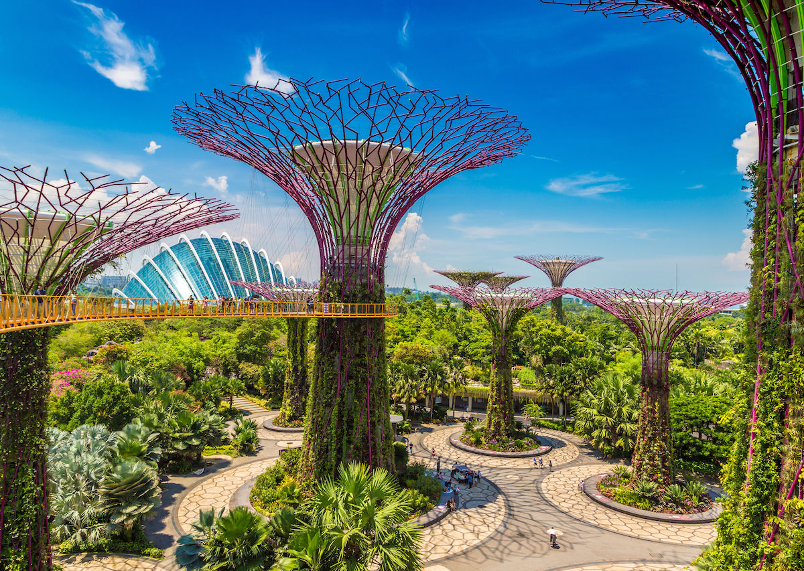
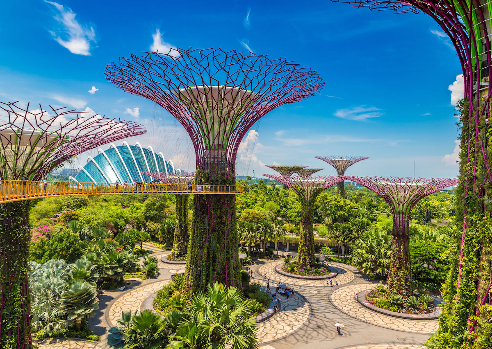

Description:
Gardens by the Bay is an independent organisation responsible for developing and managing one of Asia’s foremost garden destinations. The Gardens is led by a multidisciplinary team of professionals who have been involved in the greening of Singapore and had worked alongside international and local experts to develop the Gardens. It has an in-house team of skilled landscape designers, horticulturists, arborists, engineers, plant health, garden and turf management experts, as well as plant research and orchid breeding professionals, who leverage on the extensive global network of plant sources cultivated during the development days, to continuously curate and grow the Gardens. Guided by its vision to be a world of gardens for all to own, enjoy and cherish, Gardens by the Bay has earned numerous awards and accolades including the World Building of the Year in 2012, the President’s Design Award (Singapore) in 2013, the Outstanding Achievement Award by the Themed Entertainment Association in 2014, the Largest Glass Greenhouse (Flower Dome) in the Guinness World Records for 2015, and the TripAdvisor Certificate of Excellence in 2016. These achievements are testament to the ongoing excellence of the Gardens and spur the team towards attaining greater success.
Why to visit?:
The glistening glass conservatories known as the Cloud Forest and Flower Dome replicate different climates and altitudes so you
experience the flora of a humid tropical mountain range or the cool-dry Mediterranean. Add to that the four themed outdoor gardens
that reflect the native equatorial environment of South East Asia and you have experienced three destinations in one.
The soaring faceted glass structures that envelope each conservatory, are not only attractive but engineered to allow visible sunlight
to enter while rejecting much of the heat. The Flower Dome is also credited with being the world’s largest column-less greenhouse.
This is gardening for the 21st century!. The Gardens are scattered with 40 sculptures from local and international artists.
The Supertrees are a group of artificial trees of varying heights up to 50m. The grove of 18 Supertrees act as vertical gardens, collect
rainwater, duct air for the conservatories and generate solar power. Elevated walkways join some of the trees, allowing you to catch a
great view of the surrounding gardens and greater Singapore.
I recommend visiting Gardens By The Bay in the late afternoon and staying until sundown when the Supertrees light up in an audio-visual
spectacular. The manmade structures reminiscent of Africa’s Baobab trees are covered in a variety of plants and wired with solar cells
that power “Garden Rhapsody,” a light show to a soundtrack incorporating epic movie themes songs from Jurassic Park to The Little Mermaid.
The largest of the Supertrees also houses a restaurant with a rooftop lounge, offering a great view and dinner in one.

 


Transport:
Via bus and train:
Alight at Bayfront MRT Station (CE1/DT16)
Take Exit B and follow the underground linkway
Exit and cross the Dragonfly Bridge or Meadow Bridge into Gardens by the Bay
or
Alight at Tanjong Pagar MRT Station (EW15)
Take Exit C and head towards bus stop no. 03223 located at International Plaza, Anson Road
Hop onto bus 400 and alight at bus stop no. 03371 along Marina Gardens Drive
Other places to visit:
- Marina Bay Sands
- Botanic Gardens
- Singapore Zoo
- Orchard Road
- Singapore Flyer